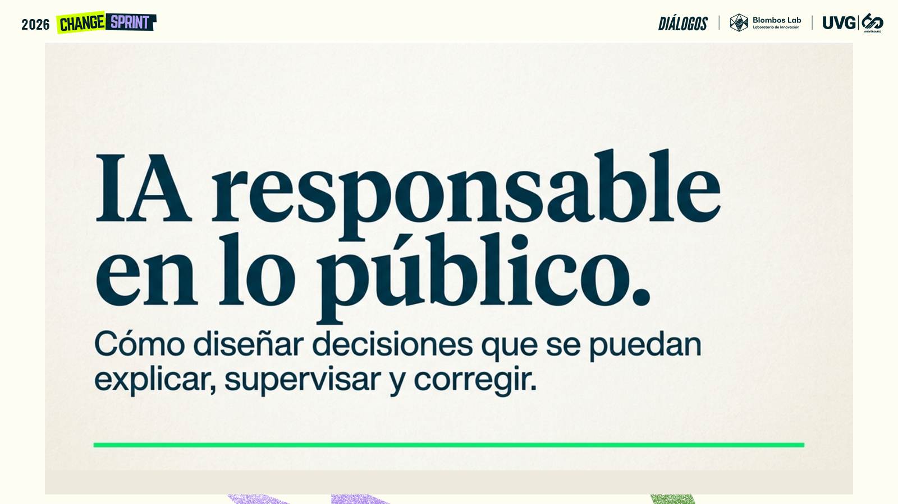

Sesión integrada · Edgar Valdés
Una sesión.
Una tarea.
Una decisión.
Todo el material necesario para llegar al taller con una hipótesis y salir con una decisión que pueda explicarse, supervisarse y corregirse.
Recurso principal · Presentación
IA responsable en lo público
Integra los fundamentos prácticos de IA con gobernanza, equidad, supervisión y el trabajo específico de los tres equipos del Fondo Nacional de Becas.

Recurso 02Antes del taller
Tarea previa · Documento PDF
Llegar con una primera decisión de diseño.
Una guía breve para identificar el problema, la aplicación posible de IA, el riesgo principal, el límite de automatización, la protección necesaria y la pregunta que el equipo debe investigar.